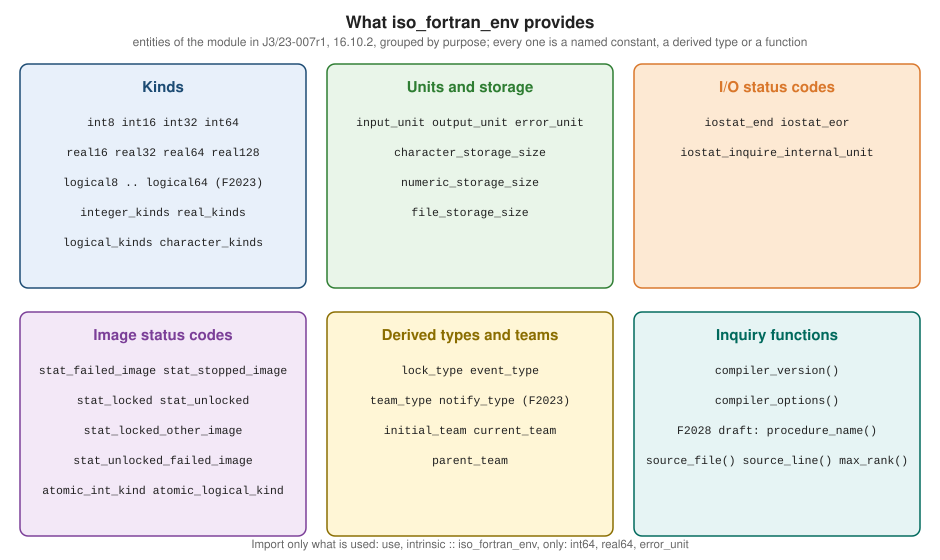

Intrinsic Modules and iso_fortran_env
|
This content was generated with the assistance of AI and should be verified against the official documentation before being relied on in production. |
This page is written against Fortran 2023 (ISO/IEC 1539-1:2023, J3/23-007r1, cited as "S" with clause numbers) and was checked on 2026-10-19.
Every example was compiled and run with GNU Fortran 16.2 under gfortran -std=f2023 -Wall -Wextra -pedantic -fimplicit-none -fcheck=all
and, wherever the feature exists there, with LLVM Flang 23, on an aarch64 Linux container. The output shown is real output. Where the two
compilers print different values, which is the normal case for kind numbers and status codes, both are shown. Examples that need a library
(OpenMP, MPI, coarrays) are compiled with the flags named in the text, and examples that are deliberately wrong show the real diagnostics.
Intel ifx, NAG and Cray compilers were not available, so nothing below claims how they behave.
An intrinsic module is a module that the processor provides, in the way a processor provides intrinsic procedures, but whose entities have to
be imported with a use statement. Clause 16.10 of the standard defines five of them: iso_fortran_env, which describes the Fortran
environment, ieee_exceptions, ieee_arithmetic and ieee_features, which give access to IEEE floating-point behaviour, and
iso_c_binding, which supports interoperability with C. Of the five, iso_fortran_env is the one almost every program imports, because it is
the portable way to name kinds (int64, real64) and units (output_unit, error_unit). The running example, heatflow, imports it in
heatflow_kinds, and this page adds a small environment module for logging. Kinds are explained in Intrinsic Types and Kinds,
the numeric inquiry functions in
Numeric Model, Bit Manipulation and Conversion, units and
files in Input/Output: Units and Files, error stops in
Error Handling and Program Termination, IEEE arithmetic in
Floating-Point and IEEE Arithmetic, C interoperability in
Interoperability with C, and images, locks, events and teams in
Coarrays, Images and Synchronization and
Coarray Teams, Events, Collectives and Atomics.
The five standard intrinsic modules
| Module | Purpose | Defined in |
|---|---|---|
|
kind constants and kind arrays, preconnected unit numbers, storage sizes, |
S 16.10.2 |
|
kind constants for C types, |
S 18.2 |
|
floating-point flags and halting modes: |
S 17 |
|
|
S 17 |
|
named constants such as |
S 17 |
Three properties of these modules matter in practice.
-
Their entities are not intrinsic. The standard says so explicitly (S 16.10.1, Note 1):
int64is an entity of a module,kindis an intrinsic function. A name from a module can be renamed, restricted withonlyand hidden withprivate; an intrinsic procedure name cannot be imported and does not need to be. -
The processor may add entities. S 16.10.1 allows a processor to extend a standard intrinsic module with public entities that the standard does not specify. That is why
use, intrinsic :: iso_fortran_envwithoutonlyis a portability risk: a vendor extension can clash with one of your names (see Naming clashes and unqualified use). -
The procedures of
iso_fortran_envaresimple. The module procedures of 16.10.2 (compiler_version,compiler_options) are simple procedures (S 16.10.1), so they can be called frompureprocedures and fromdo concurrent.
The standard makes support for the IEEE modules processor dependent (S 17.1: whether the modules are provided is processor dependent), while
iso_fortran_env and iso_c_binding are required.
Selecting an intrinsic module with use, intrinsic
The use statement is USE [ [ , module-nature ] :: ] module-name (S 14.2.2, R1409), where the module nature is intrinsic or
non_intrinsic (R1410). The constraints that matter are:
-
C1404: with
intrinsicthe name shall be an intrinsic module, and C1405: withnon_intrinsicit shall be a nonintrinsic one. -
C1406: one scoping unit shall not directly reference an intrinsic and a nonintrinsic module of the same name.
-
With no nature, the standard says that if the name is the name of both an intrinsic and a nonintrinsic module, the nonintrinsic module is accessed (S 14.2.2).
The last rule is why the nature should always be written. If a project has a file defining module iso_fortran_env (a "compatibility"
shim from the Fortran 90 days is the usual origin), a bare use iso_fortran_env silently picks the shim and the program gets different
kinds. use, intrinsic :: iso_fortran_env cannot be hijacked in that way. Modules, submodules and the nature rules are explained with a
working example in Modules and Submodules.
use, intrinsic :: iso_fortran_env, only: int64, real64, error_unitThe recommendation this page follows, and the one the Fortran community’s best-practice guide makes, is to write all three parts: the nature,
the module name and an only list. The only list documents what the unit needs, keeps the names out of the way of local names, and makes
unused imports visible to a reader and to a linter.
Asking for something that is not an intrinsic module is an error with a clear message. A misspelled name:
program typo
use, intrinsic :: iso_fortran_envs, only: int32
implicit none
print *, int32
end program typogfortran 16.2 (the real diagnostic):
27_typo.f90:2:20:
2 | use, intrinsic :: iso_fortran_envs, only: int32
| 1
Fatal Error: Cannot find an intrinsic module named 'iso_fortran_envs' at (1)
compilation terminated.Flang 23 does not distinguish the two cases: it looks for a module file and reports that it cannot find one.
error: Semantic errors in 27_typo.f90
27_typo.f90:2:21: error: Cannot parse module file for module 'iso_fortran_envs': Source file 'iso_fortran_envs.mod' was not foundAnd asking for the nonintrinsic version of an intrinsic module fails for the opposite reason: no module file of that name exists on the machine.
With use, non_intrinsic :: iso_fortran_env, only: int32 (file 23_nonintrinsic_env.f90, a four-line program) gfortran 16.2 reports:
23_nonintrinsic_env.f90:2:24:
2 | use, non_intrinsic :: iso_fortran_env, only: int32
| 1
Fatal Error: Cannot open module file 'iso_fortran_env.mod' for reading at (1): No such file or directory
compilation terminated.and Flang 23 reports that it cannot parse the module file iso_fortran_env.mod.
iso_fortran_env

Every entity of iso_fortran_env is either a default-integer named constant, a derived type, or a transformational function (S 16.10.2.1).
The module is the portable replacement for non-standard kind notations such as real*8 and integer*4, and for hard-coded unit numbers.
Kind constants
int8, int16, int32 and int64 (S 16.10.2.14) are the kind type parameters of integers whose storage size is 8, 16, 32 and 64 bits.
real16, real32, real64 and real128 (S 16.10.2.27) do the same for reals, and logical8, logical16, logical32 and
logical64 (S 16.10.2.21) for logicals. The rules are the same for all three families:
-
The value is the kind of a type whose storage size in bits is the number in the name. The name says nothing about IEEE conformance, only about size:
real64is a 64-bit real, which on every mainstream processor is IEEE binary64, but the standard does not promise it. -
If the processor has several kinds of that size, which one is provided is processor dependent.
-
If the processor has no kind of that size, the constant is -2 when the processor has a larger kind and -1 otherwise. A negative constant is therefore a legal value, not an error, and
real(kind=real16)withreal16equal to -2 is a compile-time error at the point of use.
program kind_constants
use, intrinsic :: iso_fortran_env, only: int8, int16, int32, int64, &
real16, real32, real64, real128, &
logical8, logical16, logical32, logical64
implicit none
print '(a,4(1x,i0))', 'integer kinds int8..int64: ', int8, int16, int32, int64
print '(a,4(1x,i0))', 'real kinds real16..real128: ', real16, real32, real64, real128
print '(a,4(1x,i0))', 'logical kinds logical8..64: ', logical8, logical16, logical32, logical64
print '(a,i0,a,i0)', 'kind(1) = ', kind(1), ', kind(1.0) = ', kind(1.0)
print '(a,i0,a,i0)', 'kind(1.0d0) = ', kind(1.0d0), ', kind(.true.) = ', kind(.true.)
end program kind_constantsgfortran 16.2:
integer kinds int8..int64: 1 2 4 8
real kinds real16..real128: -2 4 8 16
logical kinds logical8..64: 1 2 4 8
kind(1) = 4, kind(1.0) = 4
kind(1.0d0) = 8, kind(.true.) = 4Flang 23 supports half precision, so its real16 is a real kind:
integer kinds int8..int64: 1 2 4 8
real kinds real16..real128: 2 4 8 16
logical kinds logical8..64: 1 2 4 8
kind(1) = 4, kind(1.0) = 4
kind(1.0d0) = 8, kind(.true.) = 4On these two compilers the kind numbers equal the number of bytes, but that is a convention of the compilers and not of the language: other
a compiler is free to number kinds differently (the standard only says that the numbers are processor dependent), which is exactly why a program should write real64, a named constant
from a kinds module, or selected_real_kind, and never a literal 8. The comparison between the two compilers above is also a reminder
that real16 is new: F2023 added real16, logical8, logical16, logical32 and logical64 to the module (S, Introduction, "Intrinsic
modules"); int8 to int64 and real32 to real128 come from Fortran 2008.
Kind constants versus selected_real_kind
selected_real_kind(p, r) asks for a precision and a range and answers with a kind that satisfies both, or a negative number. The kind
constants ask for a size. They are not the same request: a processor can have a 64-bit real that is not IEEE double, or a 80-bit extended
type stored in 128 bits. Practical guidance:
-
Use
real64(or the project kinddp) when the data must interoperate with Cdouble, files written by other programs, or MPI types: the layout matters, not the precision. -
Use
selected_real_kindwhen the algorithm needs a precision, for example "at least 15 digits". -
Never write
real*8orkind=8: the former is not standard Fortran, the latter is not portable.
A module that hides the choice, and degrades gracefully when a kind is missing, uses merge in a constant expression, because the negative
constants make the comparison reliable:
module demo_kinds
use, intrinsic :: iso_fortran_env, only: real16, real32, real64, real128
implicit none
private
public :: sp, dp, hp, qp
integer, parameter :: sp = real32
integer, parameter :: dp = real64
! A negative constant means "no such kind": fall back instead of failing to compile.
integer, parameter :: hp = merge(real16, sp, real16 > 0)
integer, parameter :: qp = merge(real128, dp, real128 > 0)
end module demo_kinds
program defensive_kinds
use demo_kinds, only: sp, dp, hp, qp
implicit none
print '(a,i0,a,i0,a,i0)', 'hp: kind=', hp, ' precision=', precision(1.0_hp), ' range=', range(1.0_hp)
print '(a,i0,a,i0,a,i0)', 'sp: kind=', sp, ' precision=', precision(1.0_sp), ' range=', range(1.0_sp)
print '(a,i0,a,i0,a,i0)', 'dp: kind=', dp, ' precision=', precision(1.0_dp), ' range=', range(1.0_dp)
print '(a,i0,a,i0,a,i0)', 'qp: kind=', qp, ' precision=', precision(1.0_qp), ' range=', range(1.0_qp)
print '(a,i0)', 'selected_real_kind(15) = ', selected_real_kind(15)
print '(a,i0)', 'selected_real_kind(33) = ', selected_real_kind(33)
print '(a,i0)', 'selected_real_kind(40) = ', selected_real_kind(40)
end program defensive_kindsgfortran 16.2:
hp: kind=4 precision=6 range=37
sp: kind=4 precision=6 range=37
dp: kind=8 precision=15 range=307
qp: kind=16 precision=33 range=4931
selected_real_kind(15) = 8
selected_real_kind(33) = 16
selected_real_kind(40) = -1On Flang 23 the first line is hp: kind=2 precision=3 range=4, the others are identical. selected_real_kind(40) is -1 on both, which
means "no kind has that precision" (-2 would mean "not that range", -3 neither). The generic mechanism, including selected_int_kind and
selected_logical_kind, is on Intrinsic Types and Kinds.
Kind arrays
integer_kinds, real_kinds, logical_kinds and character_kinds (S 16.10.2.15, 16.10.2.26, 16.10.2.20, 16.10.2.4) are rank-one
default-integer array constants with lower bound 1 whose elements are all the kinds the processor supports. The order is processor
dependent, so a program must not assume that the elements are sorted. They answer questions that int8 and friends cannot: "which kinds
exist?", "how many?", "is kind 3 supported?".
program kind_arrays
use, intrinsic :: iso_fortran_env, only: integer_kinds, real_kinds, logical_kinds, character_kinds
implicit none
integer :: i
print '(a,i0,a,*(1x,i0))', 'integer_kinds (', size(integer_kinds), '):', integer_kinds
print '(a,i0,a,*(1x,i0))', 'real_kinds (', size(real_kinds), '):', real_kinds
print '(a,i0,a,*(1x,i0))', 'logical_kinds (', size(logical_kinds), '):', logical_kinds
print '(a,i0,a,*(1x,i0))', 'character_kinds (', size(character_kinds), '):', character_kinds
print '(a)', 'kind digits huge'
do i = 1, size(integer_kinds)
select case (integer_kinds(i))
case (1); print '(i4,2x,i6,2x,i0)', 1, digits(1_1), huge(1_1)
case (2); print '(i4,2x,i6,2x,i0)', 2, digits(1_2), huge(1_2)
case (4); print '(i4,2x,i6,2x,i0)', 4, digits(1_4), huge(1_4)
case (8); print '(i4,2x,i6,2x,i0)', 8, digits(1_8), huge(1_8)
case (16); print '(i4,2x,i6,2x,a)', 16, digits(1_16), 'a very large value'
end select
end do
end program kind_arraysgfortran 16.2:
integer_kinds (5): 1 2 4 8 16
real_kinds (3): 4 8 16
logical_kinds (5): 1 2 4 8 16
character_kinds (2): 1 4
kind digits huge
1 7 127
2 15 32767
4 31 2147483647
8 63 9223372036854775807
16 127 a very large valueFlang 23 reports the same integer kinds but different sets for the others:
integer_kinds (5): 1 2 4 8 16
real_kinds (5): 2 3 4 8 16
logical_kinds (4): 1 2 4 8
character_kinds (3): 1 2 4The differences are genuine: Flang offers a half-precision real (kind 2) and a bfloat16 real (kind 3), and wider character kinds 2 and 4 (kind 4 is
the one selected_char_kind('ISO_10646') returns), while gfortran offers kinds 1 and 4 only; gfortran has a 16-byte logical, Flang does not. (The three kinds in
gfortran’s real_kinds are the 4-, 8- and 16-byte reals; this aarch64 build has no 80-bit extended type, and x86-64 builds of gfortran typically list a kind 10
in addition.) The arrays are named constants but they list kinds that vary by compiler, so they are mostly used in tests, in select case dispatch, in
table-driven code and for diagnostics (an is_supported(kind) helper is one line with any).
Storage sizes
character_storage_size, numeric_storage_size and file_storage_size (S 16.10.2.5, 16.10.2.23, 16.10.2.11) give, in bits, the size of the
character storage unit, of the numeric storage unit (the size of a default integer, default real and default logical) and of the file
storage unit (what inquire(iolength=) and recl= count). The numeric storage unit is the one that matters for equivalence, common
and sequence types (S 19.5.3.2), and the file storage unit is what makes recl= and unformatted stream sizes portable.
program storage_sizes
use, intrinsic :: iso_fortran_env, only: character_storage_size, numeric_storage_size, &
file_storage_size
implicit none
integer :: i
real :: x
character(len=1) :: c
print '(a,i0)', 'character_storage_size = ', character_storage_size
print '(a,i0)', 'numeric_storage_size = ', numeric_storage_size
print '(a,i0)', 'file_storage_size = ', file_storage_size
print '(a,i0)', 'storage_size(i) = ', storage_size(i)
print '(a,i0)', 'storage_size(x) = ', storage_size(x)
print '(a,i0)', 'storage_size(c) = ', storage_size(c)
end program storage_sizescharacter_storage_size = 8
numeric_storage_size = 32
file_storage_size = 8
storage_size(i) = 32
storage_size(x) = 32
storage_size(c) = 8Both compilers print this. The intrinsic storage_size returns the size of one element of its argument in bits, and for a default integer it
equals numeric_storage_size. Do not use character_storage_size to compute the size of a record of text that you intend to write to a
file: use inquire(iolength=n) item instead, which answers in file storage units.
Preconnected units
input_unit, output_unit and error_unit (S 16.10.2.13, 16.10.2.24, 16.10.2.9) identify the preconnected units. input_unit is the unit
that a read with no unit and the asterisk unit * in a read denote, output_unit is the asterisk unit of write and the unit of print,
and error_unit is the unit "used for the purpose of error reporting"; it may be the same as output_unit. The standard fixes the roles but
not the numbers, except that none of them is -1. The common values are 5, 6 and 0.
program units
use, intrinsic :: iso_fortran_env, only: input_unit, output_unit, error_unit
implicit none
integer, parameter :: us(3) = [input_unit, output_unit, error_unit]
character(len=*), parameter :: names(3) = [character(len=11) :: 'input_unit', 'output_unit', 'error_unit']
character(len=10) :: act, frm, acc
logical :: is_open
integer :: i
print '(a,3(1x,i0))', 'input_unit, output_unit, error_unit =', input_unit, output_unit, error_unit
write (output_unit, '(a)') 'to the standard output (output_unit)'
write (error_unit, '(a)') 'to the standard error (error_unit)'
write (*, '(a)') 'to the unit written as an asterisk'
do i = 1, size(us)
inquire (unit=us(i), opened=is_open, action=act, form=frm, access=acc)
print '(a11,a,l1,3(a,a))', names(i), ' opened=', is_open, &
' action=', trim(act), ' form=', trim(frm), ' access=', trim(acc)
end do
end program unitsStandard output (identical on gfortran 16.2 and Flang 23):
input_unit, output_unit, error_unit = 5 6 0
to the standard output (output_unit)
to the unit written as an asterisk
input_unit opened=T action=READ form=FORMATTED access=SEQUENTIAL
output_unit opened=T action=WRITE form=FORMATTED access=SEQUENTIAL
error_unit opened=T action=WRITE form=FORMATTED access=SEQUENTIALStandard error:
to the standard error (error_unit)Notes:
-
The unit named
error_unitis a separate stream fromoutput_uniton both compilers, so a shell redirect> out.txtleaves the error message on the terminal. The two streams are not ordered with respect to each other: when both go to one terminal, the order of the lines depends on buffering. If the order matters,flush(output_unit)before writing toerror_unit. -
input_unitis preconnected for sequential formatted input on image one of the initial team only; on other images it is not preconnected (S 16.10.2.13). In a coarray program, read the input on image one and distribute it. -
Because
input_unit,output_unitanderror_unitare named constants, a program cannot declare a variable with one of those names after importing them. Likewise do not hard-code 5, 6 or 0: a processor that numbers its units differently would break the program, andopen(unit=6, ...)on a preconnected unit has processor-dependent behaviour. -
Choosing free unit numbers: use
open(newunit=u, ...)(Fortran 2008) as in example25_heatflow_env.f90below, which cannot collide with the preconnected units. See Input/Output: Units and Files.
Input/output status codes
iostat_end, iostat_eor and iostat_inquire_internal_unit (S 16.10.2.16, 16.10.2.17, 16.10.2.18) are the values assigned to the variable of an
iostat= specifier. iostat_end is assigned when an end-of-file condition occurs and no error occurs; iostat_eor is assigned for an
end-of-record condition (as in the non-advancing read below) when neither end-of-file nor an error occurs. Both are negative, they are different,
and a successful statement returns zero. The consequence is a test that does not depend on any compiler-specific value:
program iostat_codes
use, intrinsic :: iso_fortran_env, only: iostat_end, iostat_eor, iostat_inquire_internal_unit, &
output_unit
implicit none
character(len=5) :: text = '10 20'
character(len=4) :: word
integer :: a, b, c, ios, n
print '(a,i0,a,i0,a,i0)', 'iostat_end=', iostat_end, ' iostat_eor=', iostat_eor, &
' iostat_inquire_internal_unit=', iostat_inquire_internal_unit
! End of file: reading a third item from a two-item internal record.
read (text, *, iostat=ios) a, b, c
print '(a,i0,a,l1)', 'list-directed read, three items from two: iostat=', ios, ' is end: ', ios == iostat_end
! End of record: a non-advancing read of a short record with a long format item.
open (unit=10, status='scratch', action='readwrite')
write (10, '(a)') 'abc'
rewind (10)
read (10, '(a4)', advance='no', iostat=ios, size=n) word
print '(a,i0,a,l1,a,i0)', 'non-advancing read of a short record: iostat=', ios, &
' is eor: ', ios == iostat_eor, ' characters read=', n
close (10)
! Typical loop: end of file is a state, not an error.
open (unit=11, status='scratch', action='readwrite')
write (11, '(i0)') 1, 2, 3
rewind (11)
n = 0
do
read (11, *, iostat=ios) a
if (ios == iostat_end) exit
if (ios /= 0) stop 'read error'
n = n + a
end do
print '(a,i0)', 'sum read until iostat_end: ', n
close (11)
flush (output_unit)
end program iostat_codesgfortran 16.2:
iostat_end=-1 iostat_eor=-2 iostat_inquire_internal_unit=5018
list-directed read, three items from two: iostat=-1 is end: T
non-advancing read of a short record: iostat=-2 is eor: T characters read=3
sum read until iostat_end: 6Flang 23 prints the same lines except iostat_inquire_internal_unit=256. iostat_end and iostat_eor are -1 and -2 on both compilers, but
neither number is required by the standard; positive values mean an error and their values are processor dependent. Never compare ios to a
literal -1: write ios == iostat_end.
iostat_inquire_internal_unit is the value an inquire statement assigns to its iostat= variable when the unit it names is an internal
unit. It only occurs inside a defined derived-type input/output procedure that was called while the parent statement was reading or writing
an internal file, because that procedure receives the internal file as its unit argument. A DTIO routine that wants to behave differently for
files and strings can therefore ask:
module probe_mod
use, intrinsic :: iso_fortran_env, only: iostat_inquire_internal_unit
implicit none
type :: probe_t
integer :: v = 0
contains
procedure :: write_probe
generic :: write(formatted) => write_probe
end type probe_t
contains
subroutine write_probe(dtv, unit, iotype, v_list, iostat, iomsg)
class(probe_t), intent(in) :: dtv
integer, intent(in) :: unit
character(len=*), intent(in) :: iotype
integer, intent(in) :: v_list(:)
integer, intent(out) :: iostat
character(len=*), intent(inout) :: iomsg
integer :: ios
character(len=16) :: nm
inquire (unit=unit, form=nm, iostat=ios)
if (ios == iostat_inquire_internal_unit) then
write (unit, '(a,i0)', iostat=iostat, iomsg=iomsg) 'internal:', dtv%v
else
write (unit, '(a,i0)', iostat=iostat, iomsg=iomsg) 'external:', dtv%v
end if
if (size(v_list) < 0 .or. len(iotype) < 0) iostat = 1
end subroutine write_probe
end module probe_mod
program inquire_internal
use probe_mod, only: probe_t
implicit none
type(probe_t) :: p
character(len=20) :: buf
p%v = 7
write (buf, '(dt)') p
print '(a)', trim(buf)
write (*, '(dt)') p
end program inquire_internalinternal:7
external:7Both compilers print this. Observed on gfortran 16.2: asking for name= of the internal unit in the same inquire makes the program stop with a
segmentation fault, so the example asks for form=, which every unit has. Derived-type I/O is covered in
Derived-Type and Asynchronous I/O.
Compiler identification
compiler_version() and compiler_options() (S 16.10.2.7 and 16.10.2.6) are transformational functions with no arguments that return a
default character scalar of processor-dependent length. The first identifies the translation phase of the processor (name and version) and the
second the options that controlled it; the standard says both "should include relevant information that could be useful for diagnosing
problems at a later date". They are specification inquiries (S 10.1.11), so they may be used in specification and constant expressions, as in
the parameter below, and they are evaluated at translation time, not when the program runs: they describe the compiler that built the
program, not the machine it runs on.
program compiler_info
use, intrinsic :: iso_fortran_env, only: compiler_version, compiler_options
implicit none
character(len=*), parameter :: version = compiler_version()
print '(a)', 'compiler_version(): ' // version
print '(a,l1)', 'options mention -O2: ', index(compiler_options(), '-O2') > 0
print '(a,l1)', 'options mention -std=: ', index(compiler_options(), '-std=') > 0
end program compiler_infoBuilt with -std=f2023 -Wall -Wextra -pedantic -fimplicit-none -fcheck=all -g, gfortran 16.2 prints:
compiler_version(): GCC version 16.2.0
options mention -O2: F
options mention -std=: Tand Flang 23:
compiler_version(): Debian flang version 23.1.4
options mention -O2: F
options mention -std=: FRebuilt with -O2, both report -O2 in compiler_options(). The first Flang line shows that its string is simply the driver command
line as given (no -std was passed to it). The strings are not meant to be parsed: they differ between compilers, versions and
distributions (the Flang string above names the Debian package), and compiler_options() can be long. Use them in log files, bug reports and
--version output of command-line tools.
Atomic kinds, image status constants and the synchronization types
The rest of the module supports coarray programs. They are reference material here; the statements that use them are explained on the two coarray pages.
| Entity | Clause | What it is |
|---|---|---|
|
16.10.2.2, .3 |
kinds of integer and logical variables on which the atomic subroutines work |
|
16.10.2.19 |
derived type of lock variables, used with |
|
16.10.2.10 |
derived type of event variables, used with |
|
16.10.2.22 |
F2023: derived type of notify variables, used with the |
|
16.10.2.34 |
derived type of team variables, used with |
|
16.10.2.12, .8, .25 |
values of the |
|
16.10.2.28 |
positive if the processor can detect failed images, otherwise negative; assigned to |
|
16.10.2.31 |
positive; assigned when an image involved has initiated normal termination |
|
16.10.2.29 |
assigned to |
|
16.10.2.30 |
assigned to |
|
16.10.2.32 |
assigned to |
|
16.10.2.33 |
assigned to |
The types have private components, are extensible and have no type parameters. The restrictions that make them safe are constraints of the
language (C1603 to C1614): a variable of such a type shall be a coarray, shall not be used in a variable definition context except in the
statement that belongs to the type (lock/unlock for locks, event post/event wait for events) or as an allocate-object, and may be passed
only to an intent(inout) dummy argument of a procedure with an explicit interface. S 16.10.2.35 requires the values of
iostat_inquire_internal_unit, stat_failed_image, stat_locked, stat_locked_other_image, stat_stopped_image, stat_unlocked and
stat_unlocked_failed_image to be distinct, so one select case can test the result of any image-control statement.
The processors disagree on the values, which is the reason to compare against the names:
program status_values
use, intrinsic :: iso_fortran_env, only: stat_failed_image, stat_locked, stat_locked_other_image, &
stat_stopped_image, stat_unlocked, initial_team, current_team, &
parent_team, atomic_int_kind, atomic_logical_kind
implicit none
print '(a,i0)', 'stat_failed_image = ', stat_failed_image
print '(a,i0)', 'stat_locked = ', stat_locked
print '(a,i0)', 'stat_locked_other_image = ', stat_locked_other_image
print '(a,i0)', 'stat_stopped_image = ', stat_stopped_image
print '(a,i0)', 'stat_unlocked = ', stat_unlocked
print '(a,i0)', 'initial_team = ', initial_team
print '(a,i0)', 'current_team = ', current_team
print '(a,i0)', 'parent_team = ', parent_team
print '(a,i0)', 'atomic_int_kind = ', atomic_int_kind
print '(a,i0)', 'atomic_logical_kind = ', atomic_logical_kind
end program status_values| Constant | gfortran 16.2 | Flang 23 |
|---|---|---|
|
6001 |
101 |
|
1 |
102 |
|
2 |
103 |
|
6000 |
104 |
|
0 |
105 |
|
0, 2, 1 |
-2, -1, -3 |
|
4, 4 |
8, 8 |
Two observations. First, stat_unlocked is 0 in gfortran, the same number that means "success" in any other stat= variable. Second, Flang’s
team constants are negative; Flang rejects a program that declares a coarray unless it is built with the experimental -fcoarray option
(Multi-image features are experimental and are disabled by default), so the examples that need coarrays were run on gfortran only.
A program that declares the synchronization types needs a coarray build. With gfortran, -fcoarray=single is enough on one image (without
any -fcoarray option the compiler stops at the first coarray declaration with
Fatal Error: Coarrays disabled at (1), use '-fcoarray=' to enable), while -fcoarray=lib links against libcaf_shmem or OpenCoarrays
for several images:
program sync_types
use, intrinsic :: iso_fortran_env, only: lock_type, event_type, &
stat_locked, stat_locked_other_image, stat_unlocked, &
stat_failed_image, stat_stopped_image, &
atomic_int_kind, atomic_logical_kind
implicit none
type(lock_type), save :: lk[*]
type(event_type), save :: ev[*]
integer :: st, cnt
print '(a,*(1x,i0))', 'stat_locked, stat_locked_other_image, stat_unlocked:', &
stat_locked, stat_locked_other_image, stat_unlocked
print '(a,*(1x,i0))', 'stat_failed_image, stat_stopped_image:', stat_failed_image, stat_stopped_image
print '(a,2(1x,i0))', 'atomic_int_kind, atomic_logical_kind:', atomic_int_kind, atomic_logical_kind
lock (lk[1], stat=st)
print '(a,i0)', 'lock, stat = ', st
unlock (lk[1], stat=st)
print '(a,i0)', 'unlock, stat = ', st
event post (ev[1])
event post (ev[1])
call event_query (ev, cnt)
print '(a,i0)', 'event count after two posts = ', cnt
event wait (ev)
call event_query (ev, cnt)
print '(a,i0)', 'event count after one wait = ', cnt
end program sync_typesCompiled with gfortran -std=f2023 -Wall -Wextra -pedantic -fimplicit-none -fcheck=all -fcoarray=single:
stat_locked, stat_locked_other_image, stat_unlocked: 1 2 0
stat_failed_image, stat_stopped_image: 6001 6000
atomic_int_kind, atomic_logical_kind: 4 4
lock, stat = 0
unlock, stat = 0
event count after two posts = 2
event count after one wait = 1This page does not show failure behaviour (a second lock by the same image, an unlock of an unlocked lock): the two gfortran runtimes tried,
-fcoarray=single and -fcoarray=lib with libcaf_shmem, returned stat=0 for a repeated lock, and OpenCoarrays returned its own code 99 where
the standard names stat_locked, so a portable program cannot yet rely on them. Team statements were also incomplete: a test program that called
get_team and form team compiled with -fcoarray=single and then ended silently after its first output line, so the team constants above are
shown as values only. The coarray pages treat these statements and these limits in detail.
Which standard introduced what
The provenance below combines the Fortran 2023 text (which lists the F2023 additions in its Introduction) with what gfortran -std= itself
reports: each constant was imported alone under -std=f2003, -std=f2008 and -std=f2018, and the first level that accepted it is shown.
gfortran 16.2 rejects real16, logical8 to logical64 and notify_type below -std=f2023 (they are F2023 names), and its module does not
have stat_unlocked_failed_image or notify_type at all (real16 exists there but has the value -2).
| Edition | Entities | Evidence |
|---|---|---|
Fortran 2003 |
|
accepted by |
Fortran 2008 |
|
accepted from |
Fortran 2018 |
|
accepted from |
Fortran 2023 |
|
S Introduction: "Intrinsic modules"; gfortran rejects |
In the 2023 text, edition not confirmed |
|
S 16.10.2.33; absent from the gfortran 16.2 module, present in Flang 23 |
The checks behind the table are cheap to repeat. With -std=f95 the intrinsic nature itself is rejected:
17_pre2003.f90:2:20:
2 | use, intrinsic :: iso_fortran_env, only: output_unit
| 1
Error: Fortran 2003: module nature in USE statement at (1)and with -std=f2003 the Fortran 2008 names are rejected with a message that names the edition:
Error: Fortran 2008: The symbol 'int64', referenced at (1), is not in the selected standard
Error: Fortran 2008: The symbol 'real128', referenced at (1), is not in the selected standard
Error: Fortran 2008: The symbol 'compiler_version', referenced at (1), is not in the selected standard
Error: Fortran 2023: The symbol 'logical32', referenced at (1), is not in the selected standard(These are lines of the real output of 16_std_levels.f90, a program that imports int64, real128, compiler_version, atomic_int_kind and
logical32.) The same flag therefore doubles as a portability test: building with the oldest -std the project promises to support shows the
first entity that the older compilers do not have.
An entity that does not exist
Importing a name that the module does not provide is a compile-time error, on both compilers, even though the module as a whole exists:
program f2023_names
use, intrinsic :: iso_fortran_env, only: stat_unlocked_failed_image, notify_type
implicit none
print *, stat_unlocked_failed_image
end program f2023_namesgfortran 16.2:
14_f2023_names.f90:2:42:
2 | use, intrinsic :: iso_fortran_env, only: stat_unlocked_failed_image, notify_type
| 1
Error: Symbol 'stat_unlocked_failed_image' referenced at (1) not found in intrinsic module ISO_FORTRAN_ENV
14_f2023_names.f90:2:70:
2 | use, intrinsic :: iso_fortran_env, only: stat_unlocked_failed_image, notify_type
| 1
Error: Symbol 'notify_type' referenced at (1) not found in intrinsic module ISO_FORTRAN_ENV
14_f2023_names.f90:4:37:
4 | print *, stat_unlocked_failed_image
| 1
Error: Symbol 'stat_unlocked_failed_image' at (1) has no IMPLICIT typeSource: J3/23-007r1: 14.2.2 The USE statement and use association, R1409 to R1411 and C1404 to C1406; 16.10.1 Standard intrinsic modules, General and GNU Fortran manual: ISO_FORTRAN_ENV
Flang 23 accepts this program and prints 106 (its value of stat_unlocked_failed_image). With only the error appears at the use line with the
module name in it; without only, the same missing name appears only where it is used and, in a program without implicit none, as the
unrelated "has no IMPLICIT type". Another reason to write both only and implicit none. A compile-time failure is also the correct way to
learn that a compiler lacks a feature: a program that must run on both can guard the import in a preprocessed module (as in the
vendor-module section below), or not use the feature.
Fortran 2028 additions (draft)
The Fortran 2028 working draft J3/26-007r1 (a draft that will change) adds, in its 17.10.2:
-
procedure_name([context]),source_file([context])andsource_line(), which return the name of the enclosing procedure, the name of the source file and the source line of the reference.procedure_namereturns upper-case names such asA:Swhencontextis true; the draft defines the format for module procedures, submodules, internal procedures andbind(c, name=)procedures. -
max_rank([corank]), the maximum rank of a data object that the processor supports (the draft requires at least 15). -
completion_type(for the asynchronous collectives of the draft), and the kind constantssingle_precision,double_precision,standard_integer,standard_logicalandsystem_character.
None of them exists yet in the two compilers used here. The program below imports procedure_name, max_rank, source_file, source_line and
double_precision:
program missing
use, intrinsic :: iso_fortran_env, only: procedure_name, max_rank, source_file, source_line, &
double_precision
implicit none
print *, 'hello'
end program missinggfortran 16.2 reports Error: Symbol 'procedure_name' referenced at (1) not found in intrinsic module ISO_FORTRAN_ENV once per name
(five errors), and Flang 23 reports error: 'procedure_name' not found in module 'iso_fortran_env' for each of them as well.
Use these names only after the compiler documentation says it implements them. The page What’s New and Fortran 2028 Preview tracks the draft.
Naming clashes and unqualified use
A use statement without only imports every public entity of the module, which for iso_fortran_env is more than forty names. Declaring a local
entity with one of those names in the same scope is an error:
module wide
use, intrinsic :: iso_fortran_env
implicit none
contains
subroutine report()
integer :: int32
int32 = 3
print *, int32
end subroutine report
end module wide
program name_clash
use, intrinsic :: iso_fortran_env
implicit none
integer :: output_unit
output_unit = 7
print *, output_unit
end program name_clashgfortran 16.2:
15_name_clash.f90:15:14:
13 | use, intrinsic :: iso_fortran_env
| 2
14 | implicit none
15 | integer :: output_unit
| 1~~~~~~~~~~
Error: Symbol 'output_unit' at (1) conflicts with symbol from module 'iso_fortran_env', use-associated at (2)
15_name_clash.f90:16:3:
16 | output_unit = 7
| 1~~~~~~~~~~~
Error: Named constant 'output_unit' in variable definition context (assignment) at (1)Flang 23: error: 'output_unit' is use-associated from module 'iso_fortran_env' and cannot be re-declared.
The program unit wide in the same file shows the other half of the rule. The subroutine report declares a local integer :: int32 although
int32 is use-associated into its host module, and both compilers accept it: a declaration in an inner scope hides the host-associated name,
and only a conflict in the same scope is an error. That is legal and hard to read, and it is why an only list (or private in the module
plus explicit public statements) is better than relying on the scoping rules. If a processor extends iso_fortran_env with a new public
name (S 16.10.1 allows it), a program that imports everything can start failing to compile after a compiler upgrade, and a program that
imports with only cannot.
Other standard intrinsic modules at a glance
The three IEEE modules and iso_c_binding have their own pages; this section shows that they are imported in the same way, and what the
module-level checks look like.
program other_standard_modules
use, intrinsic :: iso_fortran_env, only: int32, int64, real32, real64, real128
use, intrinsic :: iso_c_binding, only: c_int, c_long_long, c_float, c_double, c_long_double, &
c_char, c_null_char, c_ptr, c_null_ptr, c_associated, c_sizeof
use, intrinsic :: ieee_arithmetic, only: ieee_is_nan, ieee_is_finite, ieee_value, ieee_quiet_nan, &
ieee_positive_inf, ieee_support_datatype, ieee_support_nan
use, intrinsic :: ieee_exceptions, only: ieee_flag_type, ieee_overflow, ieee_get_flag
implicit none
type(c_ptr) :: p
real(real64) :: x, inf
logical :: flag
type(ieee_flag_type) :: f
integer(c_int) :: ci
print '(a,4(1x,l1))', 'c kinds equal Fortran kinds (int, long long, float, double):', &
c_int == int32, c_long_long == int64, c_float == real32, c_double == real64
print '(a,l1)', 'c_long_double == real128: ', c_long_double == real128
print '(a,i0,a,l1)', 'c_char kind = ', c_char, ', c_null_char is NUL: ', iachar(c_null_char) == 0
p = c_null_ptr
print '(a,l1)', 'c_associated(c_null_ptr): ', c_associated(p)
print '(a,i0)', 'c_sizeof(ci) = ', c_sizeof(ci)
x = ieee_value(x, ieee_quiet_nan)
inf = ieee_value(inf, ieee_positive_inf)
print '(a,l1,a,l1)', 'is_nan(nan)=', ieee_is_nan(x), ' is_finite(inf)=', ieee_is_finite(inf)
print '(a,2(1x,l1))', 'ieee_support_datatype, ieee_support_nan for real64:', &
ieee_support_datatype(x), ieee_support_nan(x)
f = ieee_overflow
call ieee_get_flag(f, flag)
print '(a,l1)', 'overflow flag raised: ', flag
end program other_standard_modulesc kinds equal Fortran kinds (int, long long, float, double): T T T T
c_long_double == real128: T
c_char kind = 1, c_null_char is NUL: T
c_associated(c_null_ptr): F
c_sizeof(ci) = 4
is_nan(nan)=T is_finite(inf)=F
ieee_support_datatype, ieee_support_nan for real64: T T
overflow flag raised: FBoth compilers print the same lines. iso_c_binding supplies the C-compatible kinds (c_int, c_double and so on), the pointer types c_ptr and
c_funptr and c_null_char; c_sizeof comes from the same module and is, like compiler_version, a specification inquiry
(S 10.1.11). ieee_arithmetic provides the value functions ieee_value, ieee_is_nan and ieee_is_finite, and, because it behaves as if it
contained use ieee_exceptions (S 17.1), the flags ieee_overflow and ieee_get_flag are reachable from either module.
Some practical points about these modules:
-
Support is processor dependent for the IEEE modules. A program that needs a particular feature asks for it with the
ieee_support_*inquiry functions at run time, or imports the matching constant fromieee_features(for exampleieee_halting), because S 17.1 says that the extent of support for halting and the optional exceptions can be influenced by the accessibility of those constants. -
iso_c_bindingkinds are not theiso_fortran_envkinds, though on mainstream platforms they have equal values, as the first line of the output shows. Abind(c)interface must be written with thec_*names, because those are the ones the standard guarantees to correspond to C types (c_inthas the kind of Cinteven on a platform whereint32is a different kind). -
The entities of these modules are accessible only after
use. There is no implicit availability, unlike intrinsic procedures.
The details are in Floating-Point and IEEE Arithmetic and Interoperability with C.
Non-standard modules: omp_lib, mpi_f08 and ifport
Fortran code often needs modules that the standard does not define. They look the same in a use statement and behave differently in every
other way: they are not available on every compiler, they need a flag or a library, and their names, their entities and sometimes their
semantics are the vendor’s.
| Module | Provided by | Needs |
|---|---|---|
|
the OpenMP runtime, shipped with the compiler (gfortran, Flang, ifx) |
|
|
the MPI implementation (MPICH, Open MPI), not the compiler; defined by the MPI standard |
compile with the MPI wrapper |
|
Intel’s compatibility module for POSIX-style and Windows-style routines ( |
an Intel compiler; not available in gfortran or Flang |
The module omp_lib shows how a vendor module relates to the nature rule. Both compilers accept use, intrinsic :: omp_lib (both treat it as an
intrinsic module that they ship) and reject use, non_intrinsic :: omp_lib:
program nature
use, intrinsic :: omp_lib, only: omp_get_max_threads
implicit none
print '(a,i0)', 'max threads: ', omp_get_max_threads()
end program natureCompiled with -fopenmp and run with OMP_NUM_THREADS=2, gfortran 16.2 and Flang 23 print max threads: 2. With non_intrinsic:
22_nonintrinsic_nature.f90:2:24:
2 | use, non_intrinsic :: omp_lib, only: omp_get_max_threads
| 1
Fatal Error: Cannot open module file 'omp_lib.mod' for reading at (1): No such file or directory
compilation terminated.Source: J3/23-007r1: 16.10.1 Standard intrinsic modules, General and GNU Fortran manual: OpenMP Modules OMP_LIB and OMP_LIB_KINDS
That is the compiler’s choice, not the standard’s: S 16.10 lists five standard intrinsic modules, so omp_lib being intrinsic is a vendor extension
(S 16.10.1 allows a processor to provide more modules and entities). A bare use omp_lib works on both compilers.
What goes wrong without the flag, and with a module that is not there
omp_lib compiles without -fopenmp but does not link, because the runtime library is only linked with the flag:
program omp_probe
use omp_lib, only: omp_get_max_threads, omp_get_wtime
implicit none
print '(a,i0)', 'max threads: ', omp_get_max_threads()
print '(a,l1)', 'wtime is positive: ', omp_get_wtime() > 0.0d0
end program omp_probe/usr/bin/ld: /tmp/cclbzZXT.o: in function `MAIN__':
18_omp_lib.f90:(.text+0x64): undefined reference to `omp_get_max_threads_'
/usr/bin/ld: 18_omp_lib.f90:(.text+0xdc): undefined reference to `omp_get_wtime_'
collect2: error: ld returned 1 exit statusThat is the gfortran 16.2 link error without -fopenmp (the object file name varies from run to run); Flang 23 gives the same kind of error
(undefined reference to 'omp_get_max_threads'). With -fopenmp the program prints max threads: 3 for OMP_NUM_THREADS=3. Without the variable the
runtime picks the thread count itself (the number of cores, in our container).
A module that is simply absent gives a different failure, at compile time. This is ifport on gfortran 16.2 (the program is 26_ifport.f90,
a five-line program that imports sleepqq):
26_ifport.f90:2:7:
2 | use ifport, only: sleepqq
| 1
Fatal Error: Cannot open module file 'ifport.mod' for reading at (1): No such file or directory
compilation terminated.and Flang 23: error: Cannot parse module file for module 'ifport': Source file 'ifport.mod' was not found. ifport was not run with Intel
ifx, which was not available, and the text above does not claim anything about what it provides beyond its role.
For mpi_f08 the compile line is the whole story. The module is provided by the MPI installation, and the MPI Forum defines its contents
(the mpi_f08 Fortran binding is part of the MPI standard):
program mpi_probe
use mpi_f08, only: mpi_init, mpi_finalize, mpi_comm_world, mpi_comm_rank, mpi_comm_size
implicit none
integer :: rank, nranks
call mpi_init()
call mpi_comm_rank(mpi_comm_world, rank)
call mpi_comm_size(mpi_comm_world, nranks)
if (rank == 0) print '(a,i0)', 'ranks: ', nranks
call mpi_finalize()
end program mpi_probeBuilt with mpifort -std=f2023 (the wrapper uses gfortran 16.2 here) and run with mpirun -n 3:
ranks: 3Source: MPI Forum: MPI documents
It also builds warning-free with -std=f2018 -Wall -Wextra -pedantic. Notice that the strict -std flag does not reject the module: standard
conformance checks apply to the source, not to the vendor module it imports. The program does not need mpi_f08 to be intrinsic, and it is
not; the compiler finds mpi_f08.mod through the wrapper’s -I flags. Parallel programming is covered in
OpenMP and OpenACC and
MPI with mpi_f08.
Keeping vendor modules isolated
Because these modules are not portable, the practical rule is that only one module in the project may import each of them, and everything else imports that module. The rest of the program then compiles on a machine without OpenMP, MPI or the vendor library, and a port to another compiler changes one file. In heatflow the idea looks like this:
heatflow_threads is the only module that knows about omp_lib. It compiles in two configurations: with OpenMP, where it forwards to the runtime,
and without, where it provides serial stand-ins with the same interface. The choice is made by the preprocessor macro _OPENMP that
compilers define under -fopenmp. The file needs a preprocessed extension (.F90):
! heatflow_threads.F90 -- the only place that knows about omp_lib
module heatflow_threads
#ifdef _OPENMP
use omp_lib, only: omp_get_max_threads, omp_get_wtime
#endif
use, intrinsic :: iso_fortran_env, only: int64, real64
implicit none
private
public :: thread_count, wall_time, threading_name
contains
integer function thread_count()
#ifdef _OPENMP
thread_count = omp_get_max_threads()
#else
thread_count = 1
#endif
end function thread_count
real(real64) function wall_time()
#ifdef _OPENMP
wall_time = omp_get_wtime()
#else
integer(int64) :: count, rate
call system_clock(count, rate)
wall_time = real(count, real64) / real(rate, real64)
#endif
end function wall_time
function threading_name() result(name)
character(len=:), allocatable :: name
#ifdef _OPENMP
name = 'OpenMP'
#else
name = 'serial'
#endif
end function threading_name
end module heatflow_threads
program use_threads
use heatflow_threads, only: thread_count, wall_time, threading_name
implicit none
real :: t0
t0 = real(wall_time())
print '(a,a,a,i0)', 'build: ', threading_name(), ', threads: ', thread_count()
print '(a,l1)', 'clock is monotonic: ', real(wall_time()) >= t0
end program use_threadsThe program runs unchanged in four configurations:
| Build | Output |
|---|---|
gfortran 16.2 |
|
gfortran 16.2 |
|
Flang 23 (no flag) |
|
Flang 23 |
|
The same pattern isolates mpi_f08 in a heatflow_parallel module (not shown) and any vendor library: public procedures with standard
types in the signature, vendor types private to the module, and a serial fallback or a clear error when the capability is absent.
Points that make the pattern work:
-
Export a minimal interface of standard types. The wrapper above returns a default integer and a
real64, not an OpenMP type. -
Use
privateand an explicitpubliclist, so that the vendor module’s names are not re-exported. -
Choose the module by build system, not by comments. fpm, CMake and Meson can add
-fopenmpor the MPI wrapper per target; see Building with Make, CMake and Meson and Fortran Package Manager (fpm). -
Guard with the preprocessor only inside the facade. Scattering
#ifdefthrough the numerical code makes it unreadable. -
Say which compilers have been tested. Vendor modules are where "works on my compiler" begins.
A heatflow environment module
A project module that imports iso_fortran_env once, with only, and exports small, purpose-built procedures is the recommended way to use the
module: callers see log_info and log_error, not error_unit, and the dependency on one particular stream is in one place. The example
below contains the kinds module of the running project (a demo-named copy so it does not clash with the project one), a logging and
environment module, and a program that exercises both, including a scratch file opened with newunit=:
module heatflow_kinds_demo
use, intrinsic :: iso_fortran_env, only: int32, int64, real32, real64
implicit none
private
public :: sp, dp, ip, lp
integer, parameter :: sp = real32, dp = real64, ip = int32, lp = int64
end module heatflow_kinds_demo
module heatflow_env
use, intrinsic :: iso_fortran_env, only: output_unit, error_unit, iostat_end, compiler_version
use heatflow_kinds_demo, only: dp
implicit none
private
public :: log_info, log_error, build_banner, read_temperatures
contains
subroutine log_info(msg)
character(len=*), intent(in) :: msg
write (output_unit, '(a)') 'info: ' // msg
end subroutine log_info
subroutine log_error(msg)
character(len=*), intent(in) :: msg
write (error_unit, '(a)') 'error: ' // msg
end subroutine log_error
function build_banner() result(text)
character(len=:), allocatable :: text
text = 'heatflow built with ' // compiler_version()
end function build_banner
! Read temperatures from an already opened unit until end of file.
subroutine read_temperatures(unit, values, stat)
integer, intent(in) :: unit
real(dp), allocatable, intent(out) :: values(:)
integer, intent(out) :: stat
real(dp) :: t
integer :: ios
allocate (values(0))
stat = 0
do
read (unit, *, iostat=ios) t
if (ios == iostat_end) exit
if (ios /= 0) then
stat = ios
return
end if
values = [values, t]
end do
end subroutine read_temperatures
end module heatflow_env
program use_env
use heatflow_kinds_demo, only: dp
use heatflow_env, only: log_info, log_error, build_banner, read_temperatures
implicit none
real(dp), allocatable :: v(:)
integer :: stat, u
character(len=40) :: line
call log_info(build_banner())
open (newunit=u, status='scratch', action='readwrite')
write (u, '(a)') '20.5', '21.0', '19.75'
rewind (u)
call read_temperatures(u, v, stat)
write (line, '(a,i0,a,f6.2)') 'read ', size(v), ' values, mean ', sum(v) / real(size(v), dp)
call log_info(trim(line))
close (u)
open (newunit=u, status='scratch', action='readwrite')
write (u, '(a)') '20.5', 'oops'
rewind (u)
call read_temperatures(u, v, stat)
if (stat /= 0) then
write (line, '(a,i0)') 'bad record, iostat=', stat
call log_error(trim(line))
end if
close (u)
end program use_envStandard output (identical on gfortran 16.2 and Flang 23 apart from the compiler string):
info: heatflow built with GCC version 16.2.0
info: read 3 values, mean 20.42Flang 23 prints info: heatflow built with Debian flang version 23.1.4 as the first line. Standard error:
error: bad record, iostat=5010Flang 23 prints iostat=1030 for the same bad record. Everything else is the same on both. Points worth noting:
-
The
readloop testsiostat == iostat_endfirst, as the exit condition, and treats any other nonzero value as an error to report. The actual numbers (5010, 1030) are processor dependent and meant for the log, not for comparisons. -
compiler_version()is called inside a function, giving a banner that records which compiler built the program. -
values = [values, t]grows the array by reallocation on assignment (see Allocatable Arrays and Dynamic Memory); it is shown for brevity and is quadratic, so a real reader would count lines first or double the capacity. -
The two modules use
privateby default and apubliclist; only the procedures leave the module, and the kinds module is the same one that every other heatflow module imports from.
Pitfalls
-
Literal kind numbers.
real(8),integer(4)andselected_real_kindresults copied into source are the oldest portability bug in Fortran; useiso_fortran_envor a kinds module. -
Negative kind constants.
real16is -2 on gfortran 16.2. A declaration with it fails to compile, amergefallback does not (see04_defensive_kinds.f90). -
Assuming a kind number equals bytes. True on gfortran and Flang, not guaranteed by the standard; do not compute with kind values, compare them.
-
Bare
use iso_fortran_env. It imports everything, can be shadowed by a user module of the same name, and breaks when a compiler adds names. Write the nature, the module and anonlylist. -
Literal units 5, 6 and 0. Use the named constants, and
newunit=for files. -
Comparing
iostatto -1. Useiostat_endandiostat_eor. -
Comparing
statto a literal.stat_unlockedis 0 on one compiler and 105 on another; compare to the name. -
Declaring a lock, event, team or notify variable that is not a coarray is a constraint violation (C1604, C1608, C1612); declaring a coarray without a coarray build flag is a compile error on gfortran and on Flang.
-
Using
stat_unlocked_failed_imageornotify_typeon gfortran 16.2: the module does not have them. -
Vendor module names in the middle of numerical code. One facade per vendor module.
-
use, non_intrinsicfor a compiler-supplied module such asomp_libfails, because there is no module file. -
Reading
compiler_options()as if it were a flag list. It is a diagnostic string and its format is the compiler’s. -
Treating Fortran 2028 names as available.
procedure_name,source_file,source_lineandmax_rankare not in either compiler yet.
Where older material is outdated
Older Fortran material, such as Fortran 77 code and early Fortran 90 tutorials, does not know these modules, and some material that predates 2008 or 2023 is silent on their later additions. The main changes:
-
Kinds. Old code writes
real*8,double precisionandinteger*4; modern code writesreal64andint32fromiso_fortran_env(Fortran 2008).real16,logical8tological64andnotify_typearrived in Fortran 2023. -
Units. Old code writes
read (5, ...)andwrite (6, ...), and uses unit 0 for errors on some systems; the named constants are the standard way since Fortran 2003. -
Environment queries. Old code calls compiler-specific routines for the compiler name.
compiler_versionandcompiler_optionsare standard since Fortran 2008. -
Vendor portability modules. Old programs import
ifport-style modules forgetenv,systemandsleep; modern Fortran hasget_environment_variable,execute_command_lineandcommand_argument_count, which need no module (see Intrinsic Procedures Overview). -
Intrinsic module nature.
use, intrinsicexists only since Fortran 2003, which is why code that must still build with a Fortran 95 compiler cannot use it. -
IEEE modules. Material written against IEEE 754-2008 and ISO/IEC/IEEE 60559:2011 is older than the 2019/2020 revision that Fortran 2023 adopts.